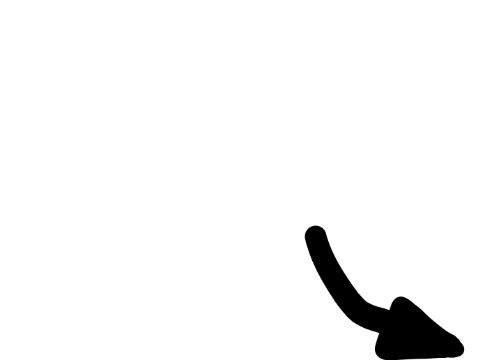
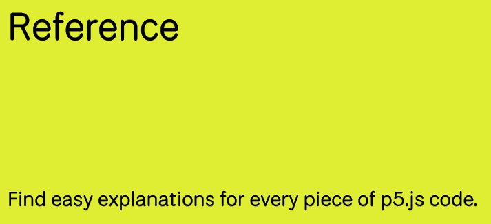
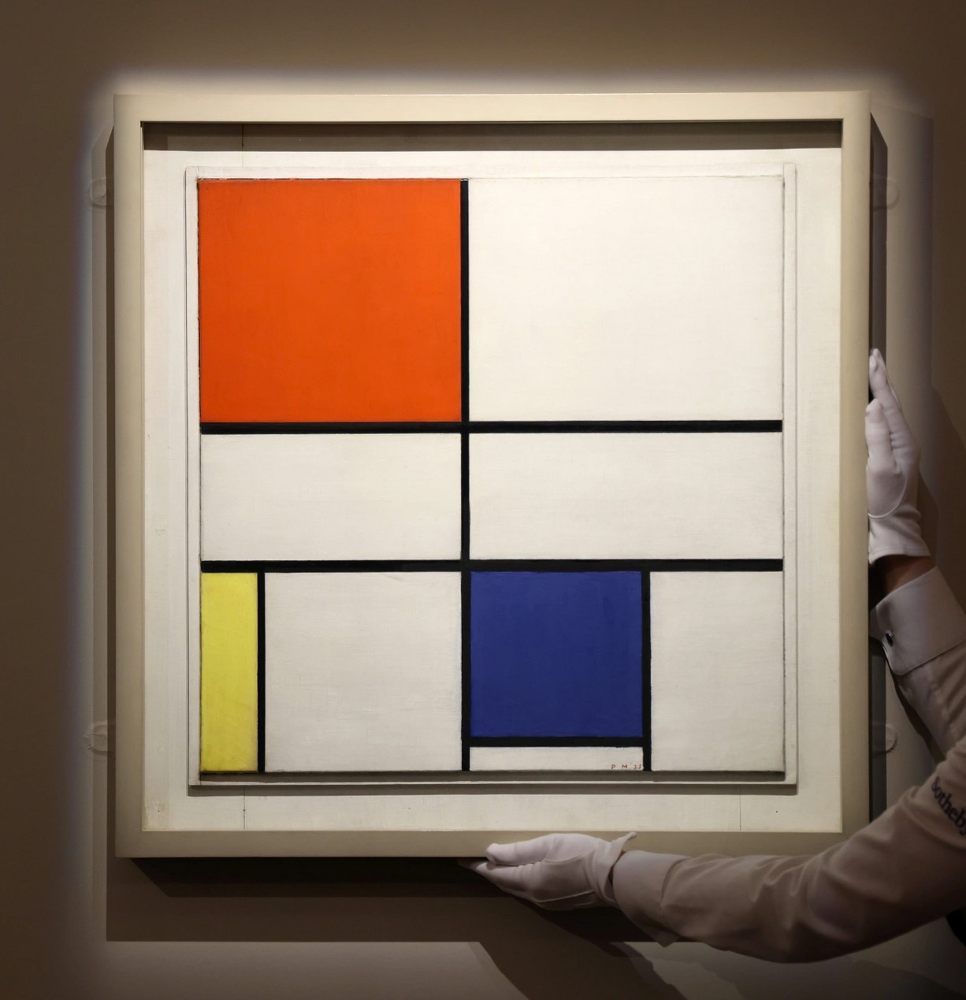
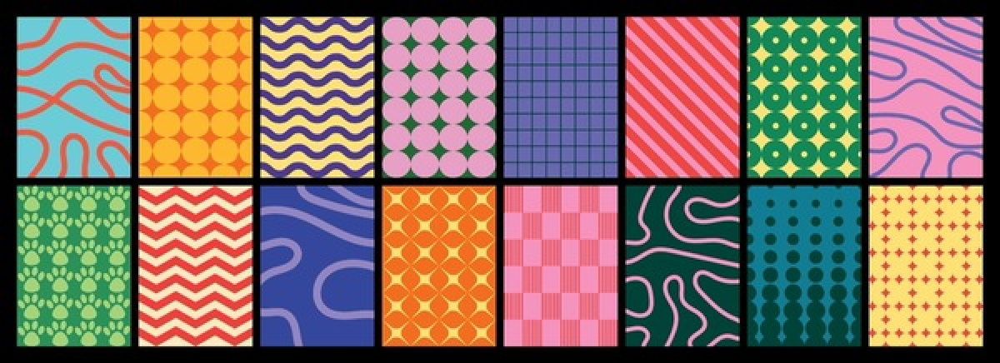

Creative Programming: Fundamentals
Lecture 2 (3 Feb)
(Re)visiting slides?
You can jump to any slide with the menu to the (bottom) left.
Did you miss a slide or want to revisit? Open the narration tab while studying to get an explanation of difficult slides.

Handing in exercises
- Programming is all about practice, so that is what the exercises are all about
- You submit on LearnIT the things you want feedback on
- There is a hand-in instruction document available on LearnIT
Reference, System Variables, and Recap
Do programmers know everything???
- Programming is about knowing how to express yourself in a programming language …
- … but you do not need to remember all functions!
p5js Reference
- Want to draw a circle, but unsure about the arguments? -> Check the p5js reference
- Don’t know how to change the background colour? -> Check the p5js reference

Slides reference
- The slides also contain code examples for many p5js functions
- This week will be very code-heavy, so please refer to the slides and code examples often!
- All code examples are available on GitHub as well. There are over 20 for just this week!
mouseX and mouseY
- Last week we briefly introduced mouseX and mouseY, but what are they exactly?
- According to the p5js reference:
- A Number system variable that tracks the mouse’s horizontal position.
System Variables
- Named containers that the system manages for us
- Created and managed automatically by p5js
- Examples:
- mouseX: horizontal position of the mouse
- mouseY: vertical position of the mouse
- width: horizontal size of the canvas
- height: vertical size of the canvas
- frameCount: amount of times draw() has been called since start
Recap: Shapes
text(),ellipse(), andrect()- You need to specify the coordinates (
x,y) and the size / contents
Mathing out
- We can use operators such as
+,-,*, and/. - This allows you to e.g. add an offset to the mouse position
+can also add strings together
Mondrian


System Variables + Shapes
- With a bit of creativity we can make an interactive ‘Mondrian’ painting!
Your own Mondrian
Class Assignment
Create your own interactive Mondrian painting! In groups of 1-3, make a p5js sketch that draws rectangles (or other shapes) based on the mouse position. Be creative with colors and shapes!
Storing and Retrieving Data
Exercise 1: Routine
- Going back to the first step of exercise 1:
- Write down a daily routine, step by step
- You go through these steps every day, in the same order
- How can we apply this to programming?
Imperative programming
- Programming is like a routine
- You tell the computer what to do, step by step
- The computer evaluates the code line by line, top to bottom
Overlapping
- When drawing, new shapes go over old shapes
- The order of shapes matter
Drawing multiple lines of text
- Per line we can use a
text()call - We need to manually space these
50pixels vertically apart
Memorizing
- What if we want to draw more lines?
- We would need to write more
text()calls and calculate theyposition each time - This is tedious and error-prone
Variables
- A variable is a named container for data
- Here we have used
letto create a variable namedinterestingNumberthat contains the number42 - We can now use
interestingNumberin our code instead of having to write42every time - You can store anything in a variable: numbers, text, etc.
Reassigning variables
- We can change the contents of a variable at any time
- This is called reassigning the variable
- We only use
letonce, when we first create the variable
Reassigning variables
interestingNumber = 100;reassigns the variable to now contain100- There are also shorthand operators to update number variables:
interestingNumber++;increases the variable by1interestingNumber--;decreases the variable by1interestingNumber += 5;increases the variable by5interestingNumber -= 2;decreases the variable by2interestingNumber *= 3;multiplies the variable by3interestingNumber /= 4;divides the variable by4
Data Types: String
- We have seen the string data type before
- Strings are sequences of characters, enclosed in quotes
''or""
Data Types: Integer
- An integer is a whole number (no decimal point)
- They can be positive, negative, or 0
- You can convert other types to integers using
int()
Data Types: Float
- A float (floating-point number) is a number with a decimal point
- They can also be positive, negative, or 0
- You can convert other types to floats using
float() round(),floor(), andceil()can round, round down, and round up floats to integers, respectively
Data Types: Boolean
- A boolean represents a logical value:
trueorfalse trueandfalseare system keywords, similar to e.g.mouseXandwidth- Booleans are often used in conditional statements to control the flow of a program
Using a variable for y position
- We set
verticalPositionto100at the start - Each time we draw a line of text, we increase
verticalPositionby50 - If we want more lines we can copy-paste the two lines
Building the example: variable ball
- Often we want to track the position of something
- Variables allow us to store and update this position over time
Logic
Conditional Statements
- Sometimes we want to only do something if a certain condition is met
- E.g. reset the ball when it leaves the screen
- This is done with conditional statements
Conditions
- A condition is an expression that is
trueorfalse(boolean) - We can use comparison operators to create conditions:
==(equal to)!=(not equal to)<(less than)>(greater than)<=(less than or equal to)>=(greater than or equal to)
If statement
- An if statement checks a condition
- If the condition is true, the code inside the if statement is executed
- In the example below, we check whether
mouseXis smaller than200.
If statement
- The evaluated condition is between parentheses
( ) - The code that is executed on true is between brackets
{ } - Indentation is not required, but makes code easier to read
If-else statement
- What happens if the condition is false?
- We can use an if-else statement to provide alternative code to execute
- True -> do the first thing. False -> do the second thing.
Example: mouse circle
- Change the circle color based on mouse position
- If
mouseX < 200-> red - Else -> blue
Example: two shapes
- Draw a shape based on vertical mouse position
- If
mouseY < 200-> draw ellipse - Else -> draw rectangle
Nesting
- We can use if statements inside other if statements: nesting
- This allows us to check multiple conditions in a structured way
Conditional operators
- We can combine conditions using conditional operators
- Common operators:
&&(and): both conditions must be true||(or): at least one condition must be true
If else if
- We can chain multiple conditions using if else if statements
- This allows us to check several conditions in sequence
Storing conditions
- We can store the result of a condition in a variable
- This can make code easier to read and manage
Building the example: resetting ball
- We can use conditions to check if the ball goes offscreen
- If it does, we reset its position
Building the example: bouncing ball
- With variables and conditions, we can make the ball bounce off the edges
- Instead of resetting the position, reverse the direction when hitting an edge
Looping
Repeating lines of code
- Remember our text example; we want to draw many lines of text
- Copy-pasting code is tedious and error-prone
- We can use loops to repeat code multiple times
For loop
- A for loop repeats a block of code a specified number of times
for (initialization; condition; update) { // code to repeat }- initialization: set up a variable to track iterations
- condition: when to stop looping
- update: change the variable each iteration
Lines example
- By putting our text drawing code inside a for loop, we can draw many lines easily
- In this example, we loop with variable
ifrom1to5
Looping with different update
- We can also use a different update step so that we do not need 2 variables
Scope
- Scope: Variables defined inside a loop are only accessible inside that loop
- Similarly, variables defined in
draw()are not accessible insetup() - You can define variables outside of functions to give them a broader scope
Looping and scope
- In this example, the variable
iis contained within the loop - We can thus define a new variable
ielsewhere without conflict
Nesting loops
- Similar to if statements, we can nest loops inside other loops
- This allows us to create more complex patterns and structures, usually 2D ones
Arrays
Storing multiple values
- Sometimes we want to store multiple values
- We can use an array to store a list of values in a single variable
- An array is created using square brackets
[], with values separated by commas,
- Here,
coloursis an array containing three strings: ‘red’, ‘green’, and ‘blue’
Accessing array elements
- We can access individual elements in an array using their index
- Array indices start at
0 - To access the first element, we use
arrayName[0], the second element isarrayName[1], and so on
Arrays of text
- Revisiting our text lines example, we can store the lines in an array
- This allows us to easily manage and access the content of the lines
Using arrays
- Arrays have some useful properties and methods, such as
myArray.lengthgives the number of elements in the arraymyArray.push(value)adds a new value to the end of the arraymyArray.pop()removes the last value from the arraymyArray.sort()sorts the array elementsmyArray.reverse()reverses the order of the array elements
- Find more in the p5js reference
For loop + array
- Arrays and loops work well together
- We can use a for loop to iterate over the elements of an array
Nesting arrays
- Arrays can also contain other arrays, creating multi-dimensional arrays
- This is useful for storing grid-like data structures
Building the example: bouncing ball
- Using arrays we can define multiple balls
- We can use a for loop to update and draw all balls
Put arrays and loops to the test!
Class Assignment: Patterns!
In a group of 1-3, start by drawing some patterns on paper or a whiteboard (e.g. https://www.tldraw.com)
Then, implement these patterns in p5js using loops and arrays where appropriate.
Can you make them interactive using mouseX and mouseY?

Summary
- We covered variables, data types, conditional statements, loops, and arrays
- These are fundamental programming concepts that will help you create more complex and interactive sketches
- Practice these concepts; it is a lot for one week, do not be afraid to make mistakes.
- Project groups will be published today.

Creative Programming 2026 Lecture 2 - Ties Robroek - IT University of Copenhagen